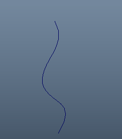
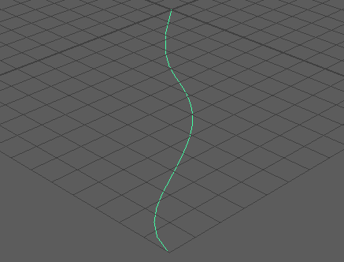
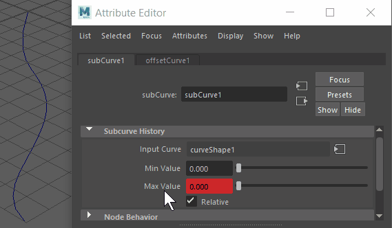
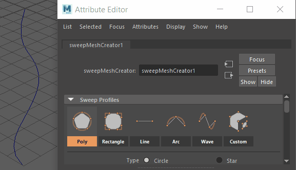
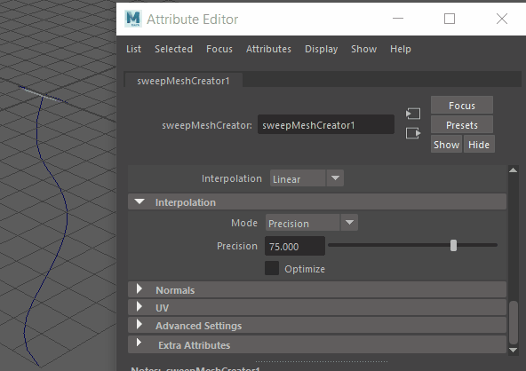

本示例说明了如何将“扫描网格”(Sweep Mesh)工具与 Maya 中的其他工具结合使用以创建独特效果。尝试使用此工作流，根据动画曲线创建生长的藤蔓效果。
- 创建一条曲线以作为动画的基础。（选择“”(Create > Curve Tools > EP Curve Tool以绘制出一条曲线。）

- 选择曲线，然后转到“ ”(Curves > Offset > Offset Curve)>
 以打开偏移曲线选项(Offset Curve Options)。
以打开偏移曲线选项(Offset Curve Options)。
- 将“偏移距离”(Offset Distance)设置为 0.00。
- 将“曲线范围”(Curve Range)设置为“部分”(Partial)，然后单击“偏移”(Offset)。将在原始曲线之上创建一条新曲线。
- 选择新曲线后，打开属性编辑器(Attribute Editor) (Ctrl + A)
- 找到“offsetCurve1”选项卡，然后单击 > （上游连接）。
- 在第 1 帧处使用时间滑块(Time Slider)，将“细分曲线历史”(Subcurve History)的“最大值”(Max Value)更改为 0.00。
- 在“最大值”(Max Value)字段上单击鼠标右键，然后选择“设置关键帧”(Set Key)。
- 将时间滑块移动到第 120 帧，并将“细分曲线历史”(Subcurve History)的“最大值”(Max Value)更改为 1.00。在“最大值”(Max Value)上单击鼠标右键，然后设置另一个关键帧。拖动时间滑块以确保偏移曲线长度从 0 更改为 1。

- 选择动画偏移曲线，然后从“多边形建模”(Poly Modeling)工具架中选择“扫描网格”(Sweep Mesh)
 ，或在 Maya 主菜单(Maya Menu)中选择“”(Create > Sweep Mesh)。
，或在 Maya 主菜单(Maya Menu)中选择“”(Create > Sweep Mesh)。
- 回放动画。网格像管一样增长，但曲线具有角度。

- 在“扫描网格”(Sweep Mesh)的“插值”(Interpolation)部分中，将“模式”(Mode)设置为“精度”(Precision)，将“精度”(Precision)值设置为 1.00，然后单击“优化”(Optimize)。网格曲线将变得平滑。
- 接下来，在“锥化曲线”(Taper Curve)部分中调整渐变，使网格尖端缩小为点。

- 尝试使用其他“扫描网格”(Sweep Mesh)选项，如“剖面”(Profile)和“分布”(Distribution)。
请参见其他使用“扫描网格”(Sweep Mesh)的工作流：扫描网格示例工作流：开瓶器和扫描网格示例工作流：框架。